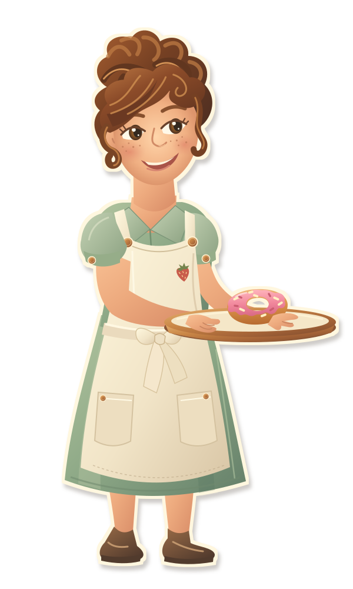
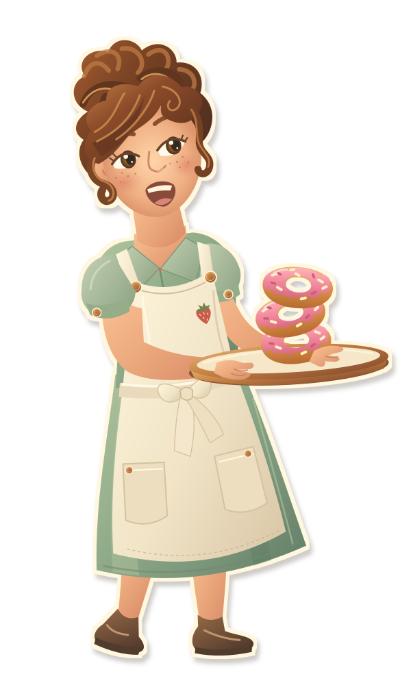
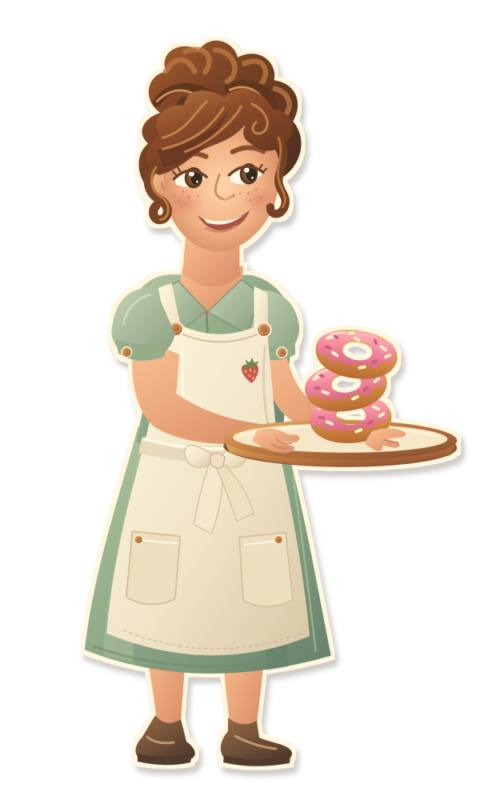

Mabel · paper cutout poses
Editable SVG artwork for the trailer foreground. Transparent outside the ivory cut edge. The shapes stay separate for later puppet animation.



Editable SVG artwork for the trailer foreground. Transparent outside the ivory cut edge. The shapes stay separate for later puppet animation.


